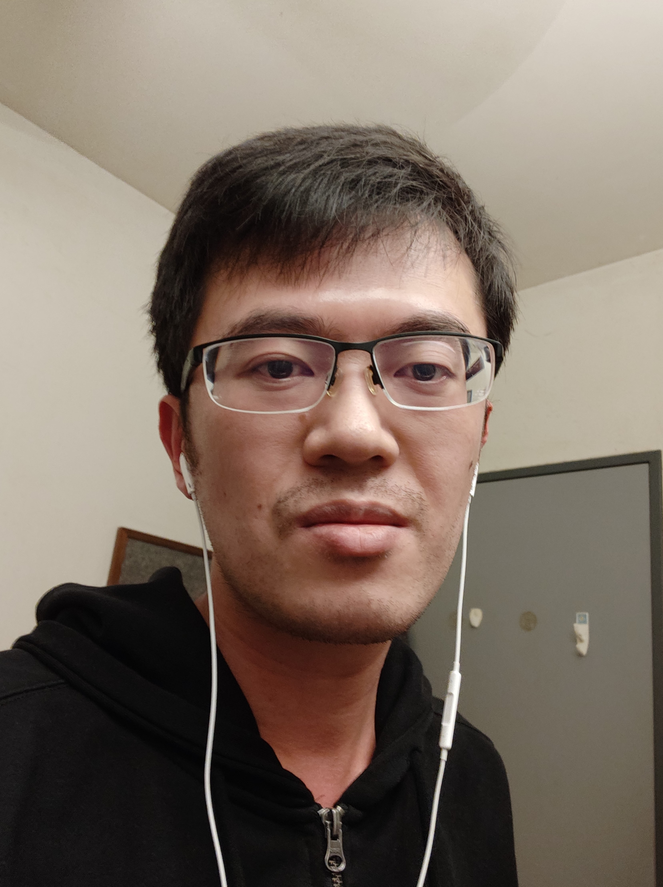

|
Dai Zhongxiang
I'm a Research Fellow in Department of Computer Science, National University of Singapore.
I work on AI/machine learning, advised by Assoc. Prof. Bryan Kian Hsiang Low from NUS and Prof. Patrick Jaillet from MIT.
I'm interested in sequential decision-making under uncertainty, including Bayesian optimization, multi-armed bandit and reinforcement learning.
Previously, I also worked on computational neuroscience.
Email /
Google Scholar /
Twitter /
Github
|

|
What's New
-
May 2022: Our paper Federated Neural Bandit uploaded to arXiv.
-
May 2022: Our papers on "Meta-Bayesian Optimization" and "Neural Ensemble Search" are accepted to UAI 2022!
-
May 2022: Our paper "Bayesian Optimization under Stochastic Delayed Feedback" accepted to ICML 2022!
-
Mar 2022: Invited to serve as a reviewer for NeurIPS 2022
-
Feb 2022: Invited to serve as a reviewer for Transactions on Machine Learning Research (TMLR)
-
Jan 2022: Our paper on NAS at Initialization accepted to ICLR 2022!
-
Nov 2021: Invited to serve as a Senior Program Committee member for ICML 2022!
-
Sep 2021: Three papers accepted to NeurIPS 2021!
-
Sep 2021: Invited to serve as a reviewer for IEEE RA-L and ICRA 2022
-
Aug 2021: Won Dean's Graduate Research Excellence Award!
|
Education
-
National University of Singapore (NUS) (Aug 2017 - Apr 2021)
-
National University of Singapore (NUS) (Aug 2011 - Jun 2015)
-
Bachelor of Engineering (Electrical Engineering), First Class Honors
|
Pre-prints
-
Federated Neural Bandit.
Zhongxiang Dai, Yao Shu, Arun Verma, Flint Xiaofeng Fan, Kian Hsiang Low and Patrick Jaillet.
Pre-print, 2022 [arXiv]
-
Adjusted Expected Improvement for Cumulative Regret Minimization in Noisy Bayesian Optimization.
Shouri Hu, Haowei Wang, Zhongxiang Dai, Kian Hsiang Low and Szu Hui Ng.
Pre-print, 2022 [arXiv]
-
Unifying and Boosting Gradient-Based Training-Free Neural Architecture Search.
Yao Shu, Zhongxiang Dai, Zhaoxuan Wu and Kian Hsiang Low.
Pre-print, 2021 [arXiv]
|
Publications
2022
-
On Provably Robust Meta-Bayesian Optimization.
Zhongxiang Dai, Yizhou Chen, Haibin Yu, Kian Hsiang Low and Patrick Jaillet.
In 38th Conference on Uncertainty in Artificial Intelligence (UAI-22)
Acceptance rate: 32.3%.
Key Words: Bayesian optimization, meta-learning.
-
Neural Ensemble Search via Bayesian Sampling.
Yao Shu, Yizhou Chen, Zhongxiang Dai and Kian Hsiang Low.
In 38th Conference on Uncertainty in Artificial Intelligence (UAI-22)
Acceptance rate: 32.3%.
Key Words: Neural architecture search, neural ensemble search.
-
Bayesian Optimization under Stochastic Delayed Feedback.
Arun Verma*, Zhongxiang Dai* and Kian Hsiang Low. (* denotes equal contribution)
In 39th International Conference on Machine Learning (ICML-22)
Acceptance rate: 21.9%.
Key Words: Bayesian optimization, delayed feedback, batch Bayesian optimization.
-
NASI: Label- and Data-agnostic Neural Architecture Search at Initialization.
Yao Shu, Shaofeng Cai, Zhongxiang Dai, Beng Chin Ooi and Kian Hsiang Low.
In 10th International Conference on Learning Representations (ICLR-22)
Acceptance rate: 32.3%. [OpenReview, arXiv]
Key Words: training-free neural architecture search, neural tangent kernel.
2021
-
Differentially Private Federated Bayesian Optimization with Distributed Exploration.
Zhongxiang Dai, Kian Hsiang Low and Patrick Jaillet.
In 35th Conference on Neural Information Processing Systems (NeurIPS-21), Dec 6-14, 2021.
Acceptance rate: 26%. [OpenReview, Code]
Key Words: federated hyperparameter tuning, differential privacy, federated Bayesian optimization.
-
Optimizing Conditional Value-At-Risk of Black-Box Functions.
Quoc Phong Nguyen, Zhongxiang Dai, Kian Hsiang Low and Patrick Jaillet.
In 35th Conference on Neural Information Processing Systems (NeurIPS-21), Dec 6-14, 2021.
Acceptance rate: 26%. [OpenReview, Code]
Key Words: conditional value-at-risk, risk-averse optimization.
-
Fault-Tolerant Federated Reinforcement Learning with Theoretical Guarantee.
Xiaofeng Fan, Yining Ma, Zhongxiang Dai, Wei Jing, Cheston Tan and Kian Hsiang Low.
In 35th Conference on Neural Information Processing Systems (NeurIPS-21), Dec 6-14, 2021.
Acceptance rate: 26%. [OpenReview, Code]
Key Words: federated reinforcement learning, byzantine optimization, policy gradient.
-
Value-at-Risk Optimization with Gaussian Processes.
Quoc Phong Nguyen, Zhongxiang Dai, Kian Hsiang Low and Patrick Jaillet.
In 38th International Conference on Machine Learning (ICML-21), Jun 18-24, 2021.
Acceptance rate: 21.4%. [Proceedings, Code]
Key Words: value-at-risk, risk-averse optimization.
2020
-
Federated Bayesian Optimization via Thompson Sampling.
Zhongxiang Dai, Kian Hsiang Low and Patrick Jaillet.
In 34th Conference on Neural Information Processing Systems (NeurIPS-20), Dec 6-12, 2020.
Acceptance rate: 20.1%. [Code, Proceedings]
Key Words: Bayesian optimization, federated learning, Thompson sampling.
-
R2-B2: Recursive Reasoning-Based Bayesian Optimization for No-Regret Learning in Games.
Zhongxiang Dai, Yizhou Chen, Kian Hsiang Low, Patrick Jaillet and Teck-Hua Ho.
In 37th International Conference on Machine Learning (ICML-20), Jul 12-18, 2020.
Acceptance rate: 21.8%. [Code, Proceedings, Video]
Key Words: Bayesian optimization, adversarial machine learning, multi-agent reinforcement learning, game theory.
-
Private Outsourced Bayesian Optimization.
Dmitrii Kharkovskii, Zhongxiang Dai and Kian Hsiang Low.
In 37th International Conference on Machine Learning (ICML-20), Jul 12-18, 2020.
Acceptance rate: 21.8%. [Code, Proceedings, Video]
Key Words: Bayesian optimization, differential privacy.
2019
-
Bayesian Optimization Meets Bayesian Optimal Stopping.
Zhongxiang Dai, Haibin Yu, Kian Hsiang Low, and Patrick Jaillet.
In 36th International Conference on Machine Learning (ICML-19), Long Beach, CA, Jun 9-15, 2019.
Acceptance rate: 22.6%. [Code, Proceedings]
Key Words: Bayesian optimization, early stopping, multi-fidelity, reinforcement learning, feature selection.
-
Bayesian Optimization with Binary Auxiliary Information.
Yehong Zhang, Zhongxiang Dai, and Kian Hsiang Low.
In Conference on Uncertainty in Artificial Intelligence (UAI-19) , Tel Aviv, Israel, Jul 22-25, 2019.
Acceptance rate: 26.2% (plenary talk). [Code]
Key Words: Bayesian optimization, multi-fidelity, entropy search, reinforcement learning.
-
Implicit Posterior Variational Inference for Deep Gaussian Processes.
Haibin Yu*, Yizhou Chen*, Zhongxiang Dai, Kian Hsiang Low, and Patrick Jaillet.
In 33th Conference on Neural Information Processing Systems (NeurIPS-19). Vancouver, Canada, Dec 7 - 12, 2019.
Acceptance rate: 3% (spotlight). [Code]
Key Words: deep Gaussian processes, generative adversarial networks, game theory.
|
Awards and Honors
-
Dean's Graduate Research Excellence Award, NUS, School of Computing, 2021
-
Research Achievement Award × 2, NUS, School of Computing, 2019 & 2020
-
Singapore-MIT Alliance for Research and Technology (SMART) Graduate Fellowship, Aug 2017
-
JDDiscovery Population Dynamics Census and Prediction Competition 2018 (annual competition hosted by JD.com): global champion,
ranked 1st among > 2,100 teams, Jan 2019 (News in English, News in Chinese)
-
ST Electronics Prize × 2 (the top student in the cohort of Electrical Engineering Year 1 & 2, NUS), Academic Year
2011/2012 & 2012/2013
-
Dean’s List × 5 (top 5% in Electrical Engineering, NUS), 2011-2015
-
Singapore Ministry of Education SM3 scholarship for undergraduate PRC students, 2010
|
Professional Services
-
Senior Program Committee (SPC) member of ICML 2022
-
Senior Program Committee (SPC) member of IJCAI 2021, Program Committee Board member of IJCAI 2022-2024
-
Program Committee (PC) member/reviewer of
-
ICML (2021, 2022)
-
NeurIPS (2020, 2021, 2022)
-
ICLR (2021, 2022)
-
AAAI (2021, 2022)
-
CoRL (2020, 2021)
-
CVPR (2021, 2022)
-
ICCV (2021)
-
IROS (2021)
-
ICRA (2022)
-
Journal reviewer for
-
IEEE Transactions on Pattern Analysis and Machine Intelligence (TPAMI)
-
Transactions on Machine Learning Research (TMLR)
-
IEEE Robotics and Automation Letters (RA-L)
|
Academic Talks
-
Bayesian Optimization Meets Bayesian Optimal Stopping, at Singapore-MIT Alliance, Future Urban Mobility Symposium 2019, Jan 28, 2019.
-
Bayesian Optimization Meets Bayesian Optimal Stopping, at Learning and Vision Lab Group Seminar, NUS, ECE, Mar 8, 2019.
-
R2-B2: Recursive Reasoning-Based Bayesian Optimization for No-Regret Learning in Games, at NUS Computing Research Week 2020, Aug 4, 2020 (top 3 student presenter).
|
Teaching
-
Tutor for CS3244 Machine Learning, NUS School of Computing (Spring 2019)
-
Teaching Assistant for CS1010E Programming Methodology, NUS School of Computing (3 semesters from 2012 to 2014)
|
|
{kind=link}